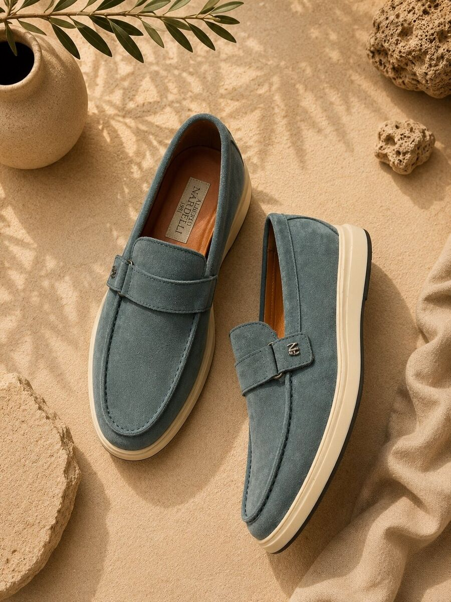
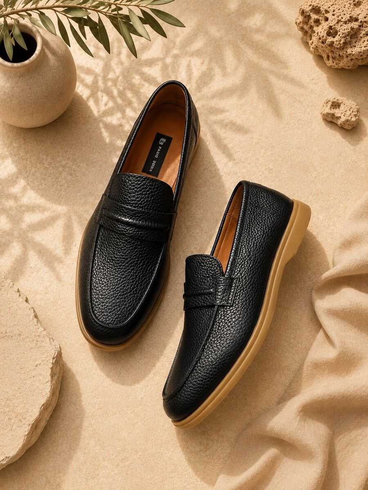
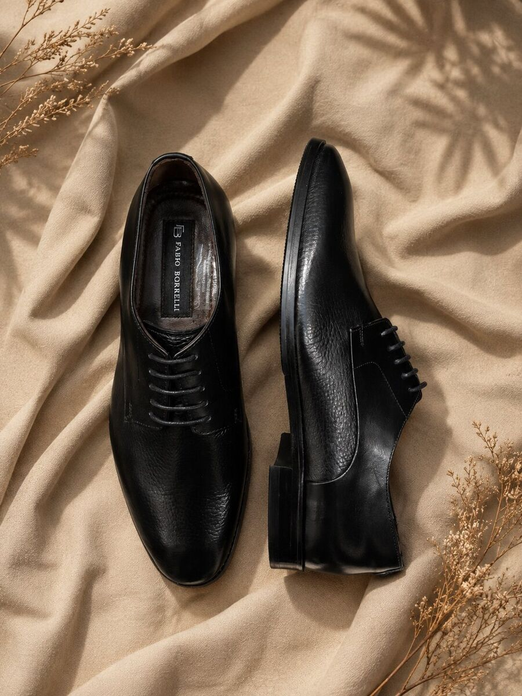
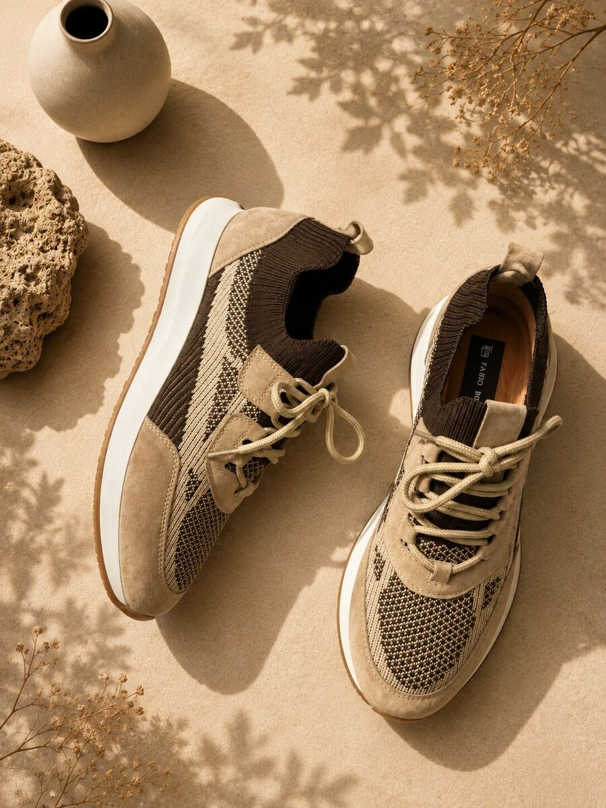
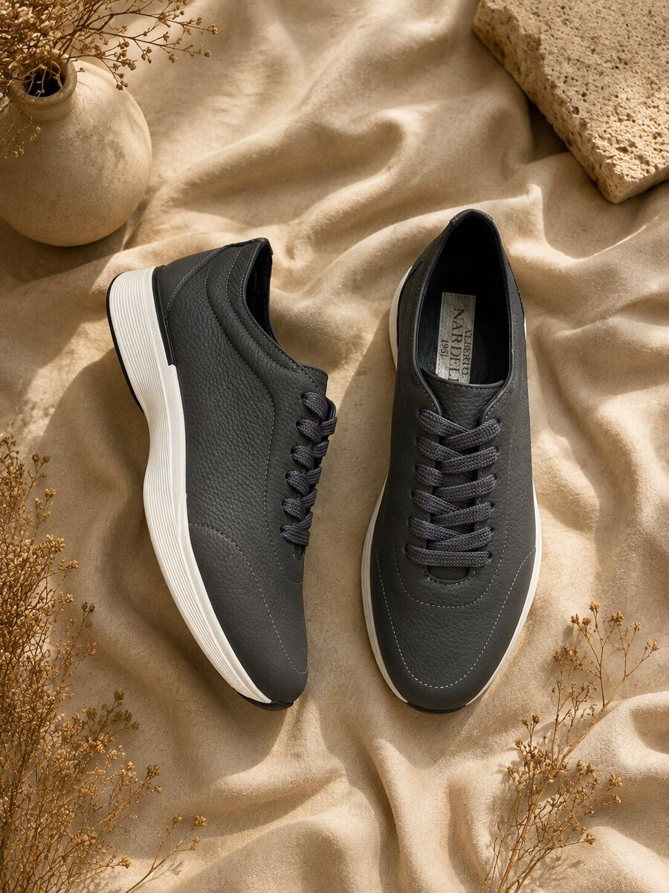

LoaferMavi süet üst, zərif metal detal və rahat açıq rəngli taban.
Mavi · 39–45Ətraflı bax →

Klassik italyan loaferinin zərifliyi və müasir sneakerin rahatlığı. Seçdiyiniz modeli, rəngi və ölçünü indi onlayn sifariş edin.
Təbii materiallar, balanslı formalar və hər gün istifadə üçün düşünülmüş rahatlıq.

LoaferMavi süet üst, zərif metal detal və rahat açıq rəngli taban.

LoaferQara dənəvər dəri, klassik penny-band və karamel rəngli taban.
 Klassik
Klassik
Əl işləməli brogue naxışları və tündləşdirilmiş burun detalı ilə qəhvəyi klassik model.

KlassikQara dəri, incə tekstura və zərif formal siluetə malik bağcıqlı model.

SneakerQəhvəyi-bej toxunma üst, süet panellər və yüngül ağ taban.

SneakerBoz dənəvər dəri və gündəlik rahatlıq üçün yüngül ağ runner tabanı.

Hər model diqqətlə seçilmiş təbii dəri və süetdən hazırlanır. Məqsədimiz sakit görünən, lakin hər detalında keyfiyyət hiss edilən ayaqqabı yaratmaqdır.
Bakıda modeli qapınızda qəbul edin, ölçünü yoxlayın və çatdırılma zamanı ödəyin.
Daha ətraflıDəri, süet və yumşaq daxili astar.
Uyğun gəlmədikdə ölçünü dəyişdiririk.
Bakı daxilində vaxtı sizinlə razılaşdırırıq.
Qapıda nağd və ya kartla ödəniş.